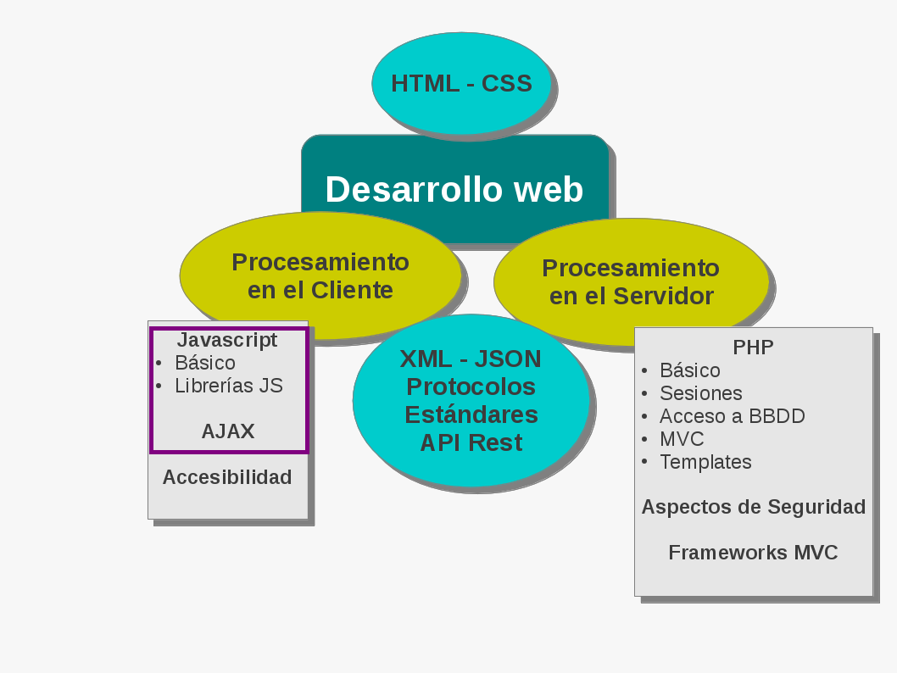
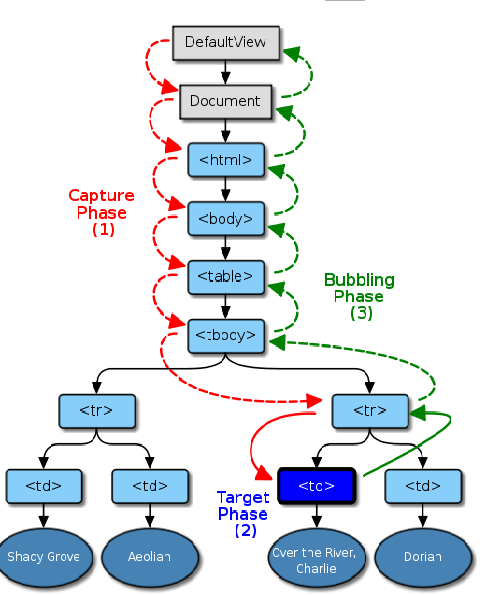
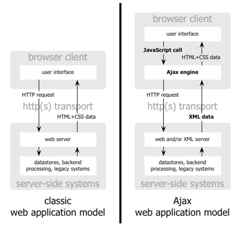
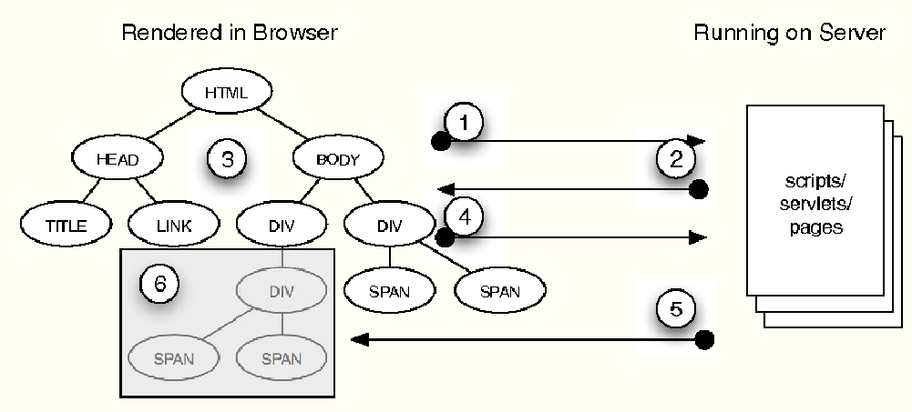
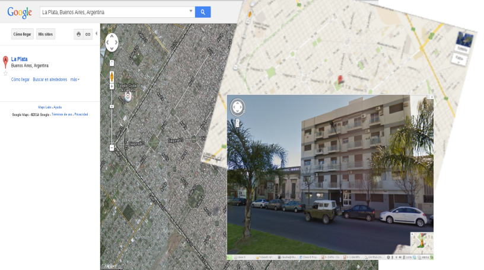
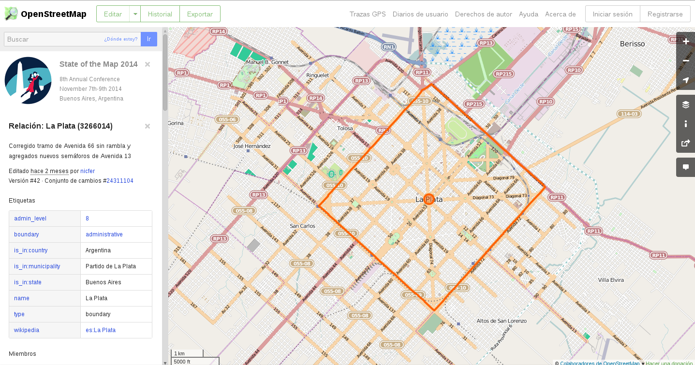

Proyecto de Software
Cursada 2014
Hoy seguimos con ...
Temario
- Repaso Clase Anterior
- AJAX
- Librerías JS: jQuery
- Muchas APIs ...
- Hoy: Trabajamos con mapas...
Repaso - DOM
- Es una API, que permite acceder a los contenidos de un documento HTML/XML.
- Proporciona una interfaz estándar para trabajar con eventos.
- El documento se ve como un árbol de nodos.
- Interfaz Node: con propiedades y métodos para acceder al árbol de nodos.
- interfaz Document: proporciona métodos para acceder y crear otros nodos en el árbol del documento.
Repaso - DOM
- El objeto document tiene sólo un elemento hijo, dado por document.documentElement.
- document.documentElement corresponde al elemento <html>
- Tipos de Nodos:
- Nodos Elementos: Corresponden a las etiquetas del documento.
- Nodos de Texto: Representan contenido, o simplemente caracteres.
- Nodos atributos: No están considerados una parte del árbol del documento.
Repaso - DOM
- DOM provee un sistema de eventos genérico que permita registrar manejadores de eventos, describir el flujo de eventos a través de la estructura del árbol y proveer información contextual sobre cada evento.

Repaso: Javascript
- Lenguaje interpretado: el intérprete de Javascript está contenido en el navegador.
- Scripts escritos entre las etiquetas <script> y </script>.
- Es posible escribir el código en un archivo externo al documento HTML.
<script src="misScripts.js">
</script>
Retomamos: Volviendo a HTML5
- Procesando Canvas: elemento usado para incorporar gráficos, imágenes, animaciones, etc.
- Almacenamiento local: localStorage y sessionStorage
¿Almacenamiento local?
- ¿Y las cookies?
- Limitadas en tamaño.
- Viajan al servidor.
- Almacenamiento Local de HTML5: Web storage
- Pares clave-valor
- La clave es un string
- El valor es cualquier tipo soportado por Javascript.
- El evento storage se dispara cuando hay un cambio.
- localStorage vs sessionStorage
- Difieren en el alcance y el tiempo de vida.
Geolocalización
- Geolocalización
- ¿Cómo lo hace? ¡Dependerá de cada browser!
- En general:
- GPS (si está disponible)
- De acuerdo a las wifi-networks cercanas y la intensidad de la señal
- De acuerdo a las torres de celular disponibles y la intensidad de la señal
- IP Address lookup
Ejemplo Firefox: http://www.mozilla.org/en-US/firefox/geolocation/
AJAX
Asynchronous JAvascript + XML
AJAX
- NO es una tecnología, sino una combinación de varias tecnologías.
- AJAX incluye:
- Presentación basada en estándares usando XHTML y CSS;
- Exhibición e interacción dinámicas usando DOM;
- Intercambio y manipulación de datos usando XML y XSLT; (podemos usar otras notaciones también)
- Recuperación de datos asincrónica usando XMLHttpRequest;
- JavaScript como lenguaje de programación.
AJAX
- Comenzó a ser popular a partir del año 2005, con Google Suggest.
- El objetivo es crear interfaces de usuario más amigables, similares a las de las PCs de escritorio, sin afectar los tiempos y el esquema de navegación.
- ¡¡IMPORTANTE!! El feedback al usuario.
Funcionamiento

De “Ajax: A New Approach to Web Applications”
Ciclo de vida
El Objeto XMLHttpRequest
- Es un objeto que permite realizar requerimientos HTTP al servidor web desde cualquier lenguaje de script client-side SIN recargar la página.
- Aún NO es estándar W3C
- Algunas propiedades...
- onreadystatechange: manejador de evento para un cambio de estado.
- readyState: el estado del objeto:
- 0 = uninitialized
- 1 = loading
- 2 = loaded
- 3 = interactive
- 4 = complete
El Objeto XMLHttpRequest (cont.)
- Algunas propiedades (Cont.)...
- responseText: retorna la respuesta como texto.
- responseXML: retorna la respuesta como XML que puede ser manipulado usando DOM.
- Algunos métodos...
- open("method", "URL", async, "uname", "pswd"): Especifica el método, URL y otros atributos opcionales del requerimiento:
- El método puede ser "GET", "POST", o "PUT"
- La URL puede ser una URL completa o relativa
- El parámetro async especifica si el requerimiento debe ser manejado en forma asincrónica o no (true o false)
Librerías Javascript
Librerías Javascript
- Contienen soluciones ya implementadas para un dominio de aplicación, que el programador sólo debe usarlas.
- El objetivo es simplificar el desarrollo.
- Hay muchas!
- La mayoría, open source.
¿Por qué?
- Elementos comunes en las aplicaciones que deben ser implementados
- Controles
- AJAX
- UI más amigables pero requieren implementación de las componentes.
- drag&drop
- Sliders
- Galerías de imágenes
- Efectos
jQuery
<script src="ruta/jquery.js"> </script>
jQuery (cont.)
- Nos provee formas de acceder a los elementos con atajos a la función DOM getElementById.
- Con DOM: document.getElementById("p1")
- Con JQuery: $("#p1")
- JQuery usa los selectores CSS para acceder a los elementos:
- $("p"): todos los elementos <p>.
- $("#elem"): el elemento cuyo id="elem".
- $("p.intro"): todos los elementos <p> con class="intro".
- $(".intro"): todos los elementos con class=”intro”
- $("p#demo"): todos los elementos <p> id="demo".
- $(this): el elemento actual
- $("ul li:odd"): Los <li> impares dentro de <ul>
Algunas consideraciones
- Función ready(): Nos asegura que el árbol DOM se cargue por completo.
$(document).ready(function() {
// instrucciones
});$('p').click(function() {
alert($(this).text())
});Ajax con jQuery
$.ajax({
url: '/ruta/hasta/pagina.php',
type: 'POST',
async: true,
data: 'parametro1=valor1¶metro2=valor2',
success: procesaRespuesta,
error: muestraError
});- Veamos un ejemplo de ajax
¿Dijimos que hay muchas APIs?
APIs para usar en el cliente
¿Usamos mapas?
Cuando pensamos en mapas en la web ...

Los mapas de Google
- MUY usados.
- MUY completos.
- Con MUCHA funcionalidad.
- Street view.
- Disponibles.
- PERO....
¿Hay alternativas libres?

El proyecto OpenStreetMap
Algunas consideraciones
// Transform from WGS 1984
var fromProjection = new OpenLayers.Projection("EPSG:4326");
// to Spherical Mercator Projection
var toProjection = new OpenLayers.Projection("EPSG:900913");map = new OpenLayers.Map("mapa");var mapnik = new OpenLayers.Layer.OSM();
map.addLayer(mapnik);
Seguimos con nuestro mapa
map.addControl(new OpenLayers.Control.PanZoomBar());
map.addControl(new OpenLayers.Control.LayerSwitcher({'ascending':false}));
map.addControl(new OpenLayers.Control.Permalink());
map.addControl(new OpenLayers.Control.Permalink('permalink'));
map.addControl(new OpenLayers.Control.MousePosition());
map.addControl(new OpenLayers.Control.OverviewMap());
map.addControl(new OpenLayers.Control.KeyboardDefaults());Agregamos marcadores
var markers = new OpenLayers.Layer.Markers( "Marcadores" );
map.addLayer(markers);
var icono = new OpenLayers.Icon("bandera.png");
...
var marcador = new OpenLayers.Marker(posicion, icono);Referencias
- AJAX
- Librerías Javascript
- HTML 5
- Web storage
- Documentación Openlayers
- Proyecto OS-RM